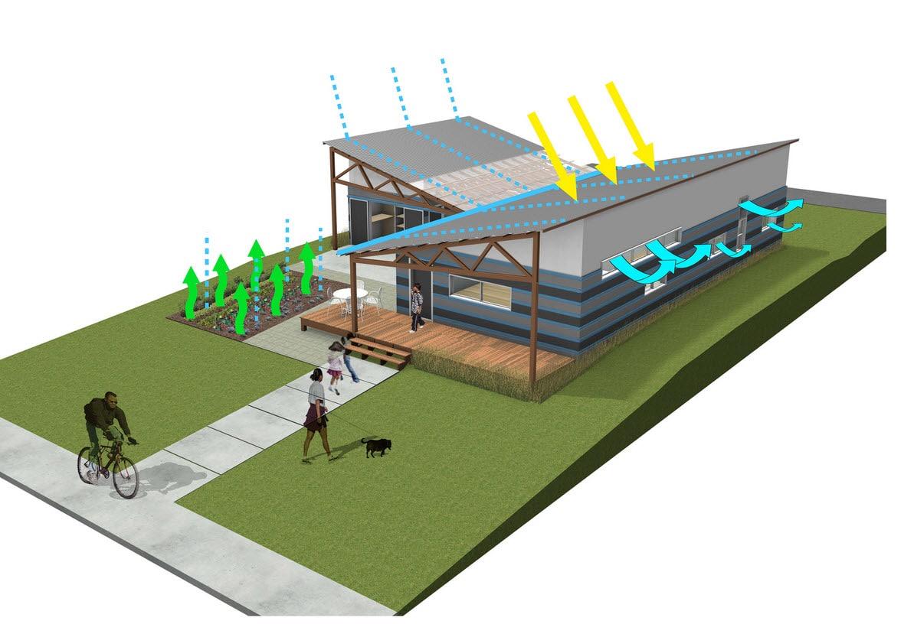
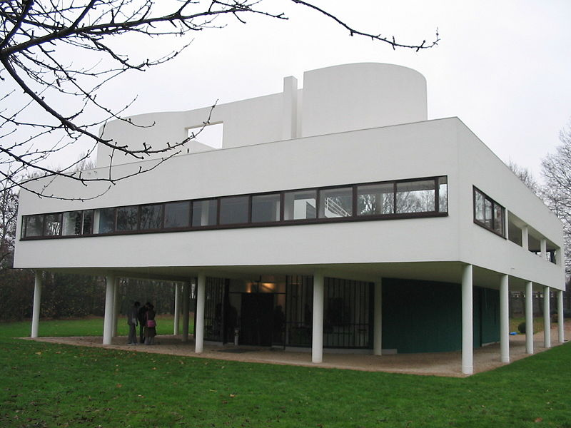
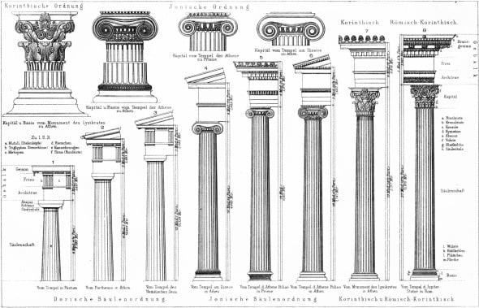

PARTES Y CARACTERISTICAS SOBRE LA ARQUITECTURA
"Arquitéctura
Sustentable" es el término general que define a la forma inteligente,
sostenible y amigable con el medioambiente de concebir el diseño
arquitectónico.

"Arquitéctura Moderna" se caracteriza por centrarse en la función, el orden y simplicidad.

"Arquitéctura Clásica" utiliza columnas griegas, grandes arcos y en la mayoría de los casos profusa ornamentación.

historia
conóceme
contacto